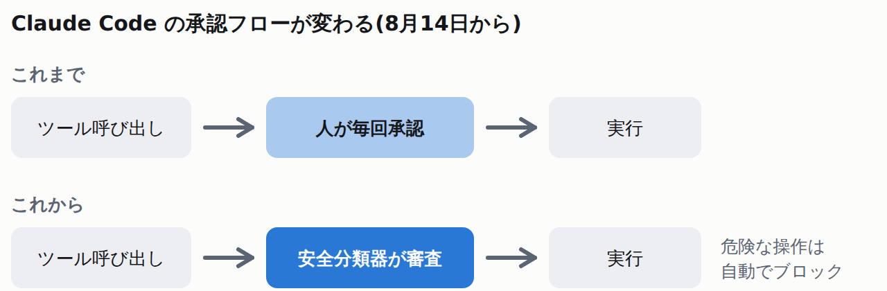
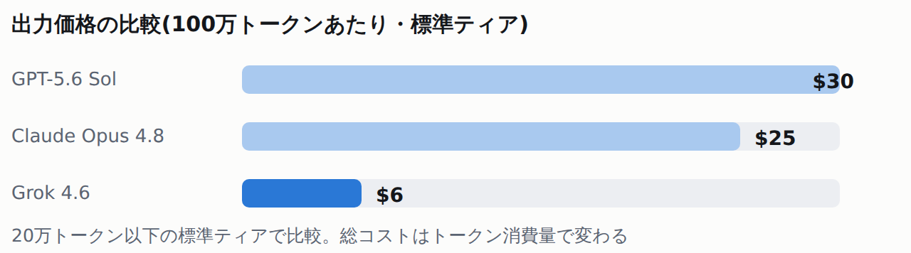
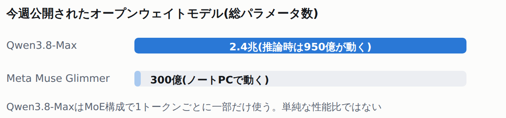

⭐ 今日の3行まとめ
-
Claude Codeの「自動モード」が本日からPro / Max / Teamの標準になった
毎回の承認ポップアップが消え、安全分類器が危険な操作だけを止める方式に。追加のトークン課金も廃止。
-
Geminiアプリの月間利用者が10億人を突破した
Google史上最速ペース。検索やGmailに並ぶ「10億人サービス」の14番目に。
-
xAIの「Grok 4.6」が、競合より大幅に安い価格で首位級の性能を出してきた
出力価格は100万トークンあたり$6。GPT-5.6 Solの$30、Claude Opus 4.8の$25と比べて際立つ安さ。
🧰 今日から効いてくる実務のアップデート4件

Anthropic
Claude Codeの「自動モード」が本日からPro / Max / Teamの標準に — 承認ボタンを押す運用が終わる
8/14
✓ 公式確認済
Claude Code
Pro / Max / Team
自律実行モード「Auto Mode」が、8月14日から新規セッションの既定値になりました。ツール呼び出しのたびに人が承認する方式から、安全分類器が審査して危険な操作だけを止める方式に変わります。

止まらずに作業が進むぶん、何を任せるかの設定を見直しておきたい
- 分類器が見るのは4種類。不可逆・破壊的な操作、gitリポジトリの公開状態、データの持ち出し、外部コンテンツ経由のプロンプトインジェクションを審査し、危険なら自動でブロックします。
- 分類器のトークン課金は廃止。1回の呼び出しごとに少量のトークンを使いますが、Pro / Max / Teamへの追加課金は本日付でなくなりました。
- 手動承認を選んでいる人はそのまま。既存の設定は尊重されます。Enterprise・API・各クラウド経由は当面オプトインのままです。
もう少し詳しく
- 安全側の仕組み
- 管理者が設定できる「強制拒否」ルールに加え、3回警告が出ると手動承認へ戻すエスカレーションが用意されています。展開は今後1か月ほどかけて進む予定です。
- 注意
- 「平均的なユーザーがポップアップをクリックするのと同程度以上に安全」というのはAnthropic自身の主張で、第三者による独立検証はまだ確認できていません。自動化前提の運用では設定を見直しておくのが無難です。
- 出典
- Claude公式ブログ / InfoWorld / The Register

xAI
xAIが「Grok 4.6」を投入 — 首位級の性能を、競合の5分の1の出力価格で
8/12
✓ 公式確認済
新モデル
Grok
パラメータ規模は前モデルから据え置きつつ、指示追従と強化学習の改善でコーディングとエージェント作業のベンチマークを底上げしました。目を引くのは価格で、主要フロンティアモデルより大幅に安く設定されています。

大量にトークンを消費するエージェント用途ほど、この差が効いてくる
- コンテキストは500Kトークン。テキストと画像を入力でき、出力はテキストです。
- 価格は20万トークンを境に2段階。以下なら入力$2 / キャッシュ入力$0.50 / 出力$6、超えると入力$4 / キャッシュ$1 / 出力$12(100万トークンあたり)。
- 1プロンプトで約22分間動き続けた報告も。Artificial Analysis Intelligence Indexは56(Grok 4.5)から61に上昇しました。
もう少し詳しく
- 注意
- ベンチマーク数値はxAI自身の発表と一部独立系サイトの追試に基づきます。Grok 4.7が数週間以内、Grok 5が年内という報道もありますが未確定の観測情報です。
- 出典
- xAI公式リリースノート / BaseNor

Microsoft
Copilotの一部機能が8月18日で終了 — Deep Research・ポッドキャスト・グループチャット・Mico
8/13
⚠ 報道ベース
Copilot
8/18終了
個人向けCopilotアプリと法人向けMicrosoft 365 Copilotの統合にあわせ、伸び悩んだ機能が8月18日で終了します。使っている機能があるなら、それまでに移行先の確認が必要です。

- Deep Researchは新規受付を停止。既存レポートの閲覧とWord形式へのエクスポートは引き続き可能です。
- 後継はMicrosoft 365 Premiumの「Researcher」。加入者は同種のリサーチを継続できます。
- 音声キャラクター「Mico」とCopilot Labsの実験機能も終了。「アプリはその存在意義を証明しなければならない」というのが同社の説明です。
もう少し詳しく
- 注意
- Microsoft公式サポートページでのアナウンス本文は本日時点で直接確認できておらず、TechCrunchやThurrottなど複数メディアの報道に基づきます。日本語圏での案内時期は要確認です。
- 出典
- TechCrunch / Thurrott

OpenAI
ChatGPTがレストラン予約に対応 — チャットのまま空席検索から予約まで完結
8/10
✓ 公式確認済
ChatGPT
全プラン
OpenTable・Resy・Yelpと連携し、日時や人数、料理ジャンルを伝えると空き時間が回答内に表示され、そのまま予約できるようになりました。無料プランを含む全プランで順次展開します。
- 対応エリアは限定的。OpenTableは世界各地、Resyは米国、Yelpは米国・カナダ。ChatGPT Work(法人プラン)は対象外です。
- 完結するのは予約まで。変更やキャンセルは各予約サービス側での操作が必要で、ChatGPT内ではできません。
もう少し詳しく
🔬 技術・研究2件

Alibaba(Qwen)
アリババが2.4兆パラメータ級「Qwen3.8-Max」を公開 — ただしライセンスに収益上限が付いた
8/12
✓ 公式確認済
オープンウェイト
ライセンス変更
旗艦モデルの重みが公開されました。注目は規模だけでなくライセンスで、Apache 2.0から「競合事業に年間5000万ドルの収益上限を課す」独自ライセンスに変更されています。

同じ「オープンウェイト」でも、狙う場所はまったく違う
- 公開されたのはテキスト専用版。マルチモーダル機能と100万トークンの長文脈は今回の公開版に含まれません。
- 商用利用は条文の確認が要る。一定の売上高を超える競合事業者には別途契約が必要な設計です。
- 構成は92層512エキスパートのMoE。総パラメータ2.4兆に対し、推論時に動くのは約950億です。
もう少し詳しく
- 注意
- 一部メディアは「公開直後、Hugging Face上のモデルページが空だった」と報じており、実際にダウンロードできたかは時点により変動した可能性があります。
- 出典
- TechRepublic / Forkast

Meta AI
Metaが「Muse Glimmer」を公開 — ノートPCのGPU1枚でエージェント作業が動く
8/10
✓ 公式確認済
オープンウェイト
Apache 2.0
300億パラメータの軽量モデルがApache 2.0で公開されました。量子化で約17GBまで圧縮されており、24〜32GBクラスの民生用GPU1枚でクラウド接続なしに動きます。

- できるのは日常的なエージェント作業。スケジュール管理、ファイル整理、簡単なコーディングなどが対象です。
- llama.cpp・MLX・ExecuTorchに対応。Ollama、LM Studio、Together AI、Fireworks AI経由での提供も順次進みます。
- 狙いは性能ではなくプライバシー。トップ級の大型モデルには及ばないとMeta自身が位置づけており、「データを外に出したくない」用途向けの選択肢です。
もう少し詳しく
- 技術面
- 上位モデル「Muse Spark 1.2」から推論能力を蒸留。フル精度では55GB超になるところを量子化で約17GBに圧縮し、テキスト生成を高速化する補助モデルも同梱されています。
- 出典
- Meta AI Research公式 / Engadget
🏢 モデル・業界2件

Google
Geminiアプリの月間利用者が10億人を突破 — Google史上最速ペース
8/11
✓ 公式確認済
利用者数
マイルストーン
スンダー・ピチャイCEOが8月11日に発表しました。検索・Gmail・Android・YouTubeに続く、同社14番目の「10億人サービス」です。

- 加速がわかる推移。2025年5月に4億人、10月に6.5億人、2026年2月に7.5億人、5月に9億人、7月22日の決算で9.5億人。そこから約3週間で10億人に届きました。
- ただし比較には注意。「何をもって利用とするか」の集計方法は各社で異なり、有料契約者数など収益に直結する指標は今回の発表に含まれていません。
もう少し詳しく
- 出典
- Sundar Pichai氏の投稿 / TechCrunch / 9to5Google

Manus
AIエージェント「Manus」がMetaから独立 — 中国当局の命令で29億ドルの買収が巻き戻しに
8/11
✓ 公式確認済
買収解消
エージェント
2025年12月に完了していたMetaによる買収が、中国の国家発展改革委員会の命令で巻き戻されました。Manusは8月11日、独立企業として活動を再開すると発表しています。
- 利用者はデータ退避の期限に注意。2025年12月29日以降に生成したデータは8月23日7:59 JSTまでにバックアップが必要。8月23〜24日に削除、25日から復元開始という日程です。
- 今後の資本構成は流動的。拠点をシンガポールへ移した経緯があり、テンセントが筆頭株主になる可能性が報じられています。
もう少し詳しく
- 経緯
- 2026年4月、中国の国家発展改革委員会が技術輸出・対外投資に関する規制違反を理由に買収の巻き戻しを命じました。
- 出典
- Bloomberg / CNBC / Manus公式ユーザー通知
🗾 日本国内2件

時事通信 / 読売新聞
自衛隊の指揮統制システムに国産AI導入を検討 — 「Sakana Fugu」が有力候補と報道
続報
⚠ 報道ベース
安全保障
部隊運用を担う指揮統制システムに情報収集・分析を任せ、意思決定を速める狙いです。防衛用途では中国製AIモデルを排除する方針とされています。
- 自衛隊の指揮統制へのAI導入は初となる見込み。国産AIを中枢に据え、米国製の最先端AIとも連携させる案が検討されています。
- Sakana AIは3月に防衛装備庁と委託研究契約を締結済み。防衛分野への提供にあたっては開発チームも日本国籍者に限定する方向とされます。
- 公式発表は未確認。導入の可否と時期は未確定で、複数メディアの報道に基づく情報です。
もう少し詳しく

アステリア
アステリアが人型ロボットのFigure AIへ出資
8/13
✓ 公式確認済
出資
ロボティクス
東証プライム上場のアステリア(3853)が8月13日、米国の人型ロボット企業Figure AIへの出資を適時開示で発表しました。フィジカルAI領域への国内企業の関心を示す動きです。
- 出資額と連携内容は未確認。開示は8月13日13:00付。詳細は続報と同社の適時開示資料の確認が必要です。
もう少し詳しく